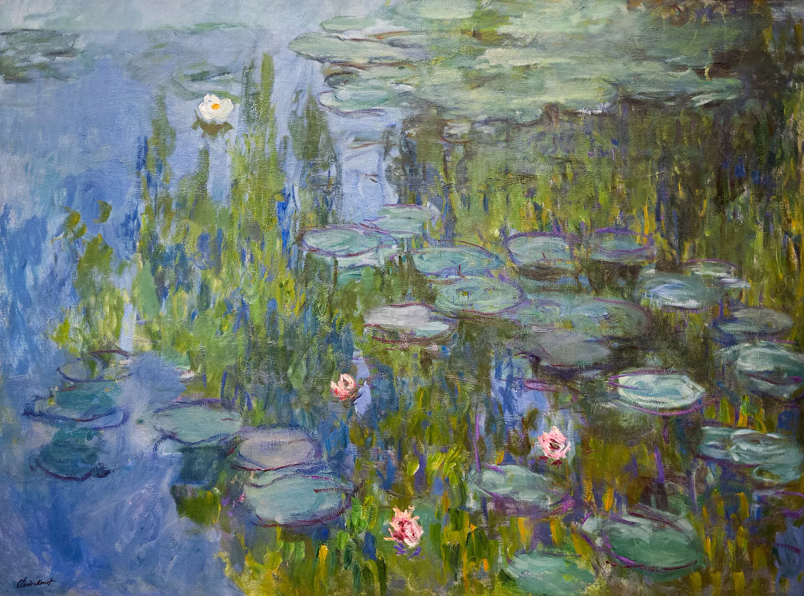

ISSUE 01 — A LIVING HERBARIUM FOR YOUR HANDS
指间花园
以手为土，
以息为风。
Your hands are
the weather.
进入温室 →
MOVE HANDSAWAKEN THE BLOOM
SPECIMEN I / HM-2026-SPR-001 · STUDYING THE INTERACTIVE BOTANY

PAEONIA SUFFRUTICOSA · SPECIMEN I · PLATE I
牡丹
Paeonia suffruticosa
FAMILY: PAEONIACEAE · BLOOM: APR — MAY
SCROLL TO POLLINATE ↓
FPS 60
LATENCY 12 MS
CAMERA OFF
春分
夏至
秋分
冬至
INPUT POINTER
LOCAL NO UPLOAD
TIME 01:02
ACT II · 授粉 / POLLINATION让指尖先落下，
花才想起如何开。
七种花式 · 五种手势 · 三路输入
SEVEN MODES · FIVE GESTURES · THREE INPUTS

FRAME I · 指尖花窗
花窗 · 正在醒来
Frame — the flower is waking.
Curtis's Botanical Magazine · 1809 · PD
POINTER 指针TOUCH 双指CAMERA 相机
FPS 60
LATENCY 14 MS
CAMERA OFF
春分夏至秋分冬至
MODE FRAME
LOCAL NO UPLOAD
TIME 01:03
ACT III · 温室 / GLASSHOUSE这里没有墙，
只有气候。
四时之息 · 春分 夏至 秋分 冬至
SIMULATED CLIMATE · NOT SENSOR DATA

雨池 · 夏至
Ripple — the pond answers before the wind.
III / VI · GLASSHOUSE
雾会回来。
PEONY
LEAF
POLLEN
POND
FPS 60
LATENCY 12 MS
CAMERA OFF
CLIMATE 18.4 °C / 62 %
春分夏至秋分冬至
SIMULATED NON-SENSOR
TIME 01:04
间奏 · 田野笔记 / INTERLUDE · FIELD NOTES
每一种手感，
都是天气留下的笔迹。
园丁不在场时，记录还在继续。风的方向、露水的重量、某朵花不合时宜地开了。
第 3 日
DAY 3
风从东南来
花窗自己开了一指宽；没有人碰它。
给风留一扇窗。第 9 日
DAY 9
露水重过昨天
铁线蕨的背面结了一层雾，像有人呵过气。
雾会回来。第 17 日
DAY 17
一枚不合时宜的花瓣
芍药在冬天开了第三层。气候是假的，手是真的。
花不知道季节。第 27 日
DAY 27
夜里的访客
关灯后，花粉像小小的灯。没有人看见，除了你。
夜里也要开花。
雾会回来。
园丁的手记
FPS 60
LATENCY 12 MS
CAMERA OFF
春分夏至秋分冬至
HANDWRITING ON
LOCAL NO UPLOAD
TIME 01:05
把会消失的，压进纸里。
5 株 · 本机保存
5 SPECIMENS · LOCAL ONLY
MODE 花式全部花窗翻绳雨池晨雾
SEASON 季节春分夏至秋分
SORT 排序最新最多致谢
搜索题记、花式、采集号…
IV
HERBARIUM
标本馆
全部标本按花式按季节每日一株
TODAY'S SPECIMEN
今天，花园选了这一株。
由本机种子决定 · 每日更换
HM-2026-SPR-001PL. I
牡丹Paeonia suffruticosa
M. IKEDA · PD · SPRING
HM-2026-SPR-002PL. II
牡丹Paeonia suffruticosa
CURTIS · 1809 · PD
HM-2026-SPR-003PL. III
白牡丹Paeonia suffruticosa
M. IKEDA · PD · SPRING
HM-2026-SUM-004PL. IV
牡丹Paeonia suffruticosa
H. ANDREWS · PD · SUMMER
HM-2026-SUM-005PL. V
睡莲Nymphaea tetragona
C. MONET · PD · SUMMER
空位 · VACANT
FPS 60
LATENCY 12 MS
CAMERA OFF
STORAGE LOCAL · 5
春分夏至秋分冬至
LOCAL NO ACCOUNT
TIME 01:06
尾幕 · 版权页 / CODA · COLOPHON
花园合上时，
手还记得。
HORTUS MANUS 是一座本地的数字标本馆。它不联网生长，也不替你保管手。
字体 / TYPEFACES
Instrument Serif、Cormorant、Noto Serif SC、Noto Sans SC、IBM Plex Mono、Ma Shan Zheng，全部自托管。
图版 / PLATES
PD / CC0 植物学素材。来源逐项记录在 ASSET-LICENSES.md，作者与馆藏可查。
材料 / MATERIALS
React、Three.js、Canvas 2D、MediaPipe、Hono、SQLite、WebAudio。全部在本机运行。
研究 / RESEARCH
三段手指涂鸦视频的逐帧拆解、154 帧植物 gif、翻绳源码，以及 50 座以上植物学站点的编排研究。
隐私 / PRIVACY
摄像头画面不上传；采集只存元数据与种子；分享页可删除。没有账号，没有 PII。
for Gerard & Claude
© 2026 HORTUS MANUS · LOCAL EDITION · 作品与代码 · 本地实验 · 不作商业发行
回到园门 ↑
VI / VI · COLOPHON
FPS 60
LATENCY 12 MS
CAMERA OFF
EDITION LOCAL · 01